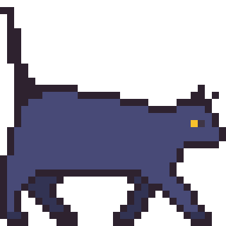
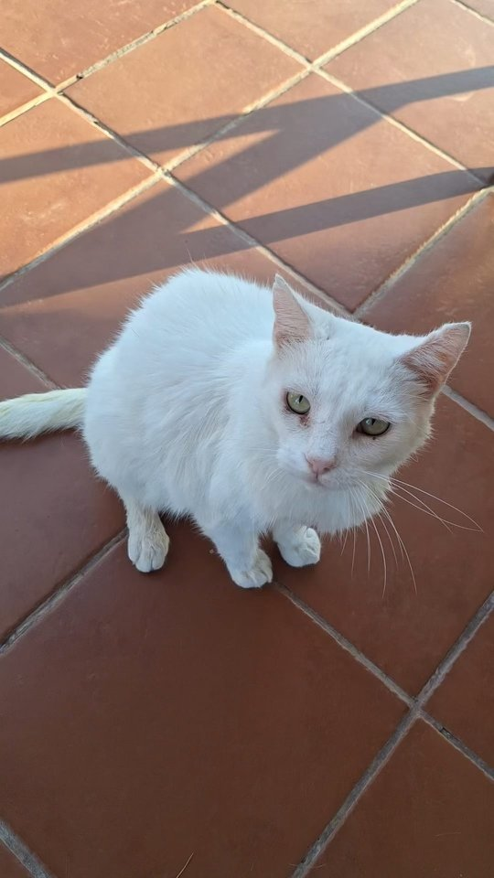

Welcome to Pawside Haven
Pawside Haven is a no-kill cat shelter in Norfolk, Virginia. We rescue and rehome cats of all ages. Since 2010, we have found forever homes for over 3,000 cats.
Our shelter has space for up to 60 cats at a time. We have 12 staff members and over 40 volunteers who care for every animal we take in.
We believe every cat deserves a loving home. We work hard to match each cat with the right family. Our placement rate is 97%, and we are proud of every adoption.
Why Adopt from a Shelter?
There are many great reasons to adopt instead of shop:
- You save a cat's life
- All cats are spayed or neutered before adoption
- Every cat gets a full vet checkup
- Microchipping is included in the fee
- Shelter cats are often already litter trained
- You get post-adoption support from our staff
Learn more at the ASPCA website.
Cat of the Month: Biscuit

Biscuit is a sweet white cat with gentle green eyes. She loves sitting in warm sunny spots and is very calm and easygoing. She is vaccinated, spayed, and ready for her forever home. Click the image to learn more!
Visit our Meet the Cats page to see all available cats.